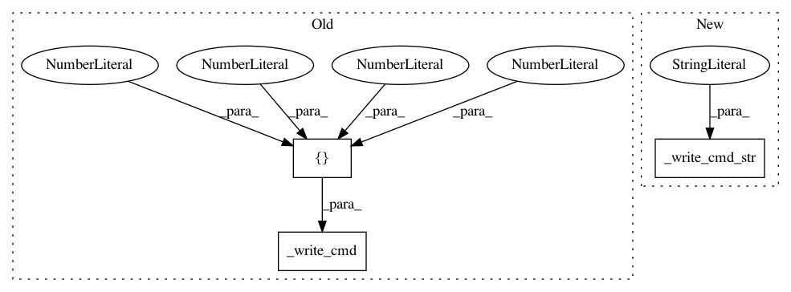

4f0bbdd9d6fb3fe549072a64b567ed3658eeb072,muselsl/muse.py,Muse,select_preset,#Muse#Any#,219
Before Change
Untested but possible values are "p22" and "p23"
Default is "p21".
if preset == 20:
self._write_cmd([0x04, 0x70, 0x32, 0x30, 0x0a])
elif preset == 22:
self._write_cmd([0x04, 0x70, 0x32, 0x32, 0x0a])
elif preset == 23:
self._write_cmd([0x04, 0x70, 0x32, 0x33, 0x0a])
After Change
elif preset == 22:
self._write_cmd_str("p22")
elif preset == 23:
self._write_cmd_str("p23")
else:
self._write_cmd_str("p21")
def disconnect(self):
In pattern: SUPERPATTERN
Frequency: 3
Non-data size: 3
Instances
Project Name: alexandrebarachant/muse-lsl
Commit Name: 4f0bbdd9d6fb3fe549072a64b567ed3658eeb072
Time: 2021-01-10
Author: 0xloem@gmail.com
File Name: muselsl/muse.py
Class Name: Muse
Method Name: select_preset
Project Name: alexandrebarachant/muse-lsl
Commit Name: 4f0bbdd9d6fb3fe549072a64b567ed3658eeb072
Time: 2021-01-10
Author: 0xloem@gmail.com
File Name: muselsl/muse.py
Class Name: Muse
Method Name: ask_reset
Project Name: alexandrebarachant/muse-lsl
Commit Name: 4f0bbdd9d6fb3fe549072a64b567ed3658eeb072
Time: 2021-01-10
Author: 0xloem@gmail.com
File Name: muselsl/muse.py
Class Name: Muse
Method Name: ask_device_info